| 肝臓が合成する | 肝臓が合成しない |
|---|---|
| アルブミン（肝特異的） | アンモニア（腸管・筋肉で産生） |
| プロトロンビン（II因子） | 間接ビリルビン（脾・網内系でHbから産生） |
| フィブリノゲン（I因子） | γ-グロブリン（形質細胞が産生） |
| 凝固因子II,VII,IX,X（Vit K依存） |
| 動脈/静脈 | 内容 |
|---|---|
| 腹腔動脈 | T12→総肝動脈・脾動脈・左胃動脈の3分岐 |
| 総肝動脈 | →固有肝動脈＋胃十二指腸動脈 |
| 上腸間膜静脈＋脾静脈 | →門脈を形成 |
| 下腸間膜静脈 | →脾静脈に合流（門脈には直接合流しない） |
| Glisson鞘内 | 門脈・肝動脈・胆管（肝静脈は含まない） |
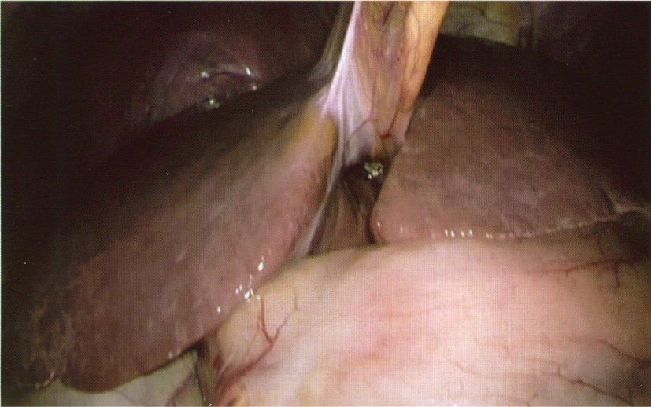
| 閉塞性 | 溶血性 | 肝細胞性 | |
|---|---|---|---|
| 掻痒感 | ◎ | △ | △ |
| 便色 | 灰白色 | 正常〜濃 | 不定 |
| ALP/γ-GTP | 著明↑ | 正常 | ↑ |
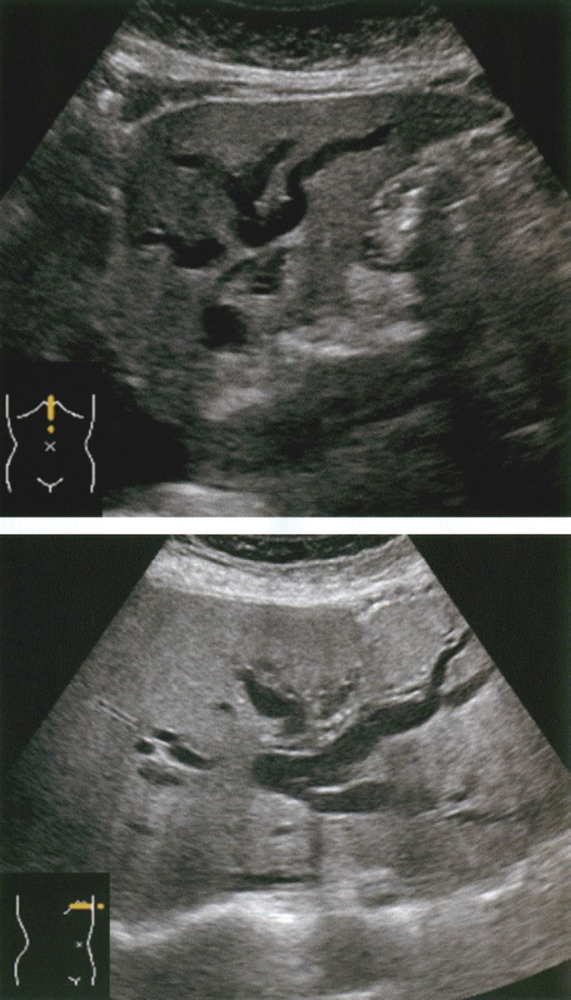
| 直接Bil | ALP | AST/ALT | |
|---|---|---|---|
| 閉塞性黄疸 | ↑↑ | ↑↑↑ | 軽度↑ |
| 溶血性 | → | → | → |
| 肝細胞性 | ↑ | ↑ | ↑↑↑ |
| 選択肢 | 正誤 | 解説 |
|---|---|---|
| a アラニン→糖新生 | ✅ | アラニン回路：筋→アラニン→肝でピルビン酸→糖新生 |
| b 胆汁酸←中性脂肪 | ❌ | 胆汁酸はコレステロールから合成 |
| c 非代償肝硬変→芳香族AA↓ | ❌ | 芳香族AA↑・分岐鎖AA↓→BTR低下 |
| d アンモニア→TCAで尿素 | ❌ | →尿素回路で尿素に |
| e 抱合後→脂溶性 | ❌ | 抱合後は水溶性になる |
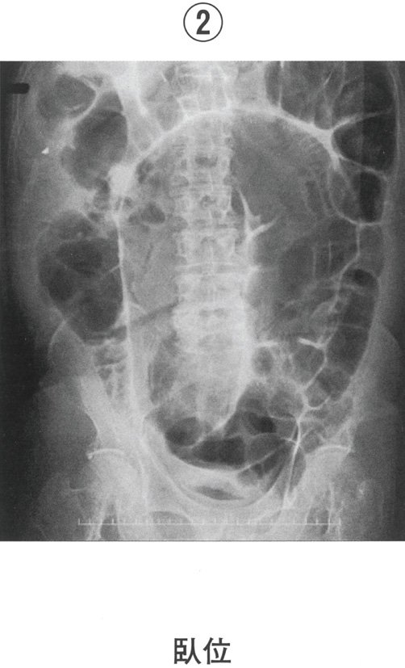
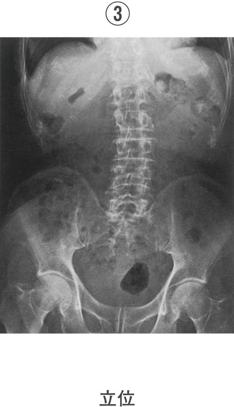
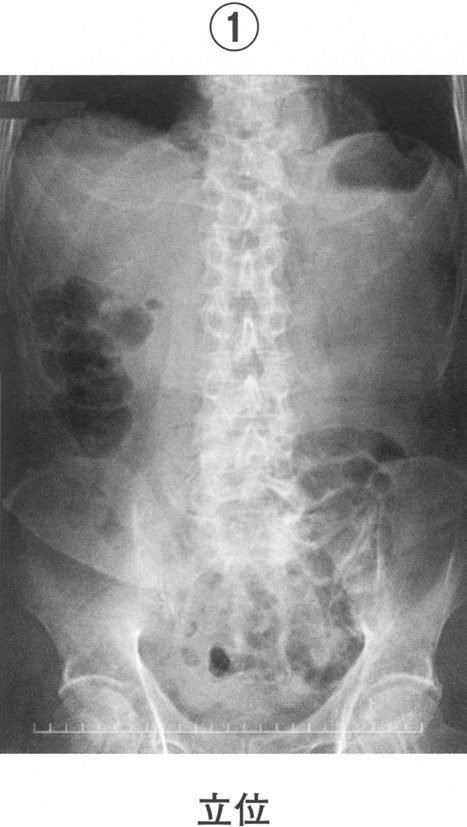
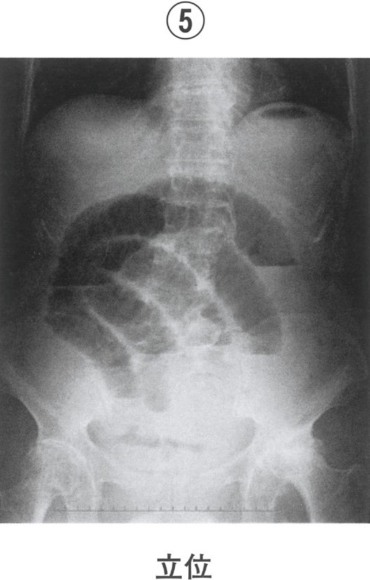
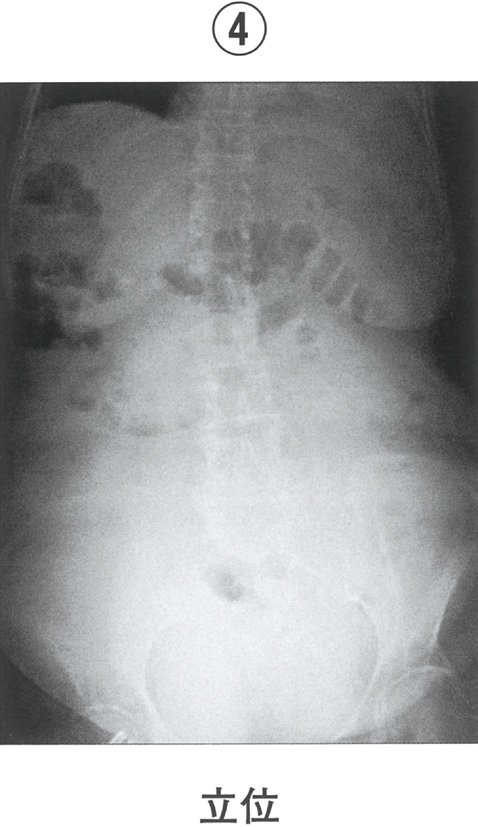
| 疾患 | 黄疸型 | 予後 |
|---|---|---|
| Gilbert | 間接↑ | 良好・治療不要 |
| Crigler-Najjar I型 | 間接↑↑↑ | 核黄疸→肝移植 |
| Dubin-Johnson | 直接↑ | 良好 |
| Rotor | 直接↑ | 良好 |
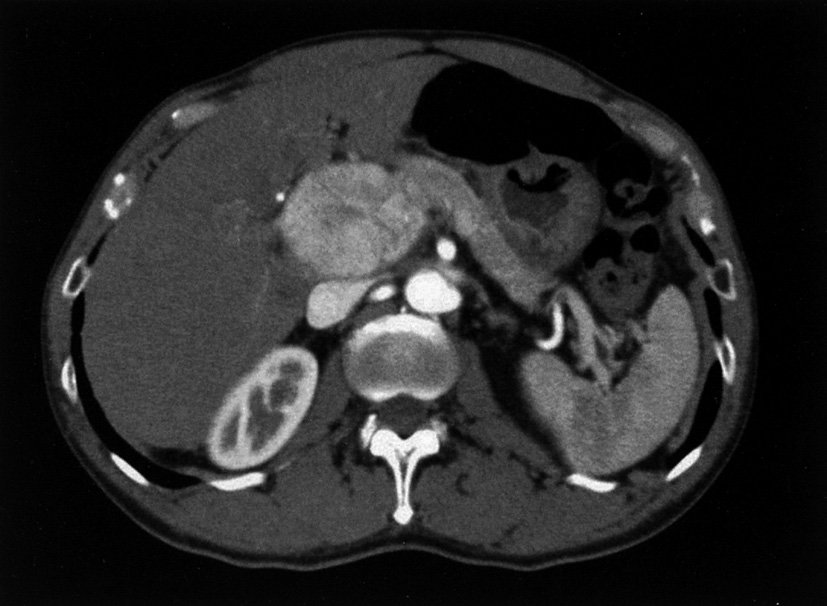
| 門脈に流入する | 門脈に流入しない |
|---|---|
| 上腸間膜静脈（SMV） | 下腸間膜静脈→脾静脈に合流 |
| 脾静脈 | 腎静脈（IVCへ） |
| 胃左静脈（冠状静脈） | 肺静脈（左房へ） |
| 症候群 | 正しい組合せ |
|---|---|
| Gilbert症候群 | 間接Bil↑（非抱合型）→UGT1A1変異 |
| Zollinger-Ellison症候群 | ガストリン産生腫瘍→難治性消化性潰瘍 |
| Peutz-Jeghers症候群 | 口唇色素沈着＋消化管ポリポーシス |
| Mirizzi症候群 | 胆嚢頚部結石による総肝管圧迫 |
| Budd-Chiari症候群 | 肝静脈閉塞→門脈圧亢進・肝腫大 |
| 検査項目 | 変化 | 解説 |
|---|---|---|
| ALP | ↑↑↑ | 胆道系酵素の代表 |
| γ-GTP | ↑↑↑ | 胆道系酵素 |
| 直接Bil | ↑↑ | 抱合型Bil逆流 |
| 尿中ウロビリノーゲン | ↓/陰性 | 腸肝循環遮断 |
| 尿中Bil | 陽性 | 直接Bil→尿中排泄 |
| 門脈に流入 | IVCに直接流入（門脈外） |
|---|---|
| 上腸間膜静脈 | 肝静脈（肝→IVC） |
| 脾静脈 | 腎静脈（腎→IVC） |
| 胃左静脈 | 精巣・卵巣静脈（→IVC） |
| 指標 | 低下の意義 |
|---|---|
| アルブミン（Alb）≥3.5 g/dL | 肝合成能↓ |
| PT活性≥70% | 凝固因子合成↓ |
| ICG試験（R15）<15% | 肝細胞機能・血流↓ |
| ChE≥200 U/L | 肝合成能↓（栄養も反映） |
| T-Bil | 排泄能↓ |
| 細胞型 | 割合 | 産生ホルモン | 血糖作用 |
|---|---|---|---|
| B（β）細胞 | 約70% | インスリン | 血糖↓ |
| A（α）細胞 | 約20% | グルカゴン | 血糖↑ |
| D（δ）細胞 | 約5% | ソマトスタチン | 分泌抑制 |
| PP細胞 | 少数 | 膵ポリペプチド | 膵外分泌抑制 |
| 正しい知識 | |
|---|---|
| 胆汁産生 | 肝細胞が産生（胆囊は産生しない） |
| 胆囊の機能 | 貯蔵・濃縮（水分吸収で5-10倍に濃縮） |
| 胆囊の容量 | 約50mL |
| 胆囊収縮 | CCK（コレシストキニン）により収縮 |
| 胆汁産生量 | 500-1000 mL/日（肝細胞が産生） |
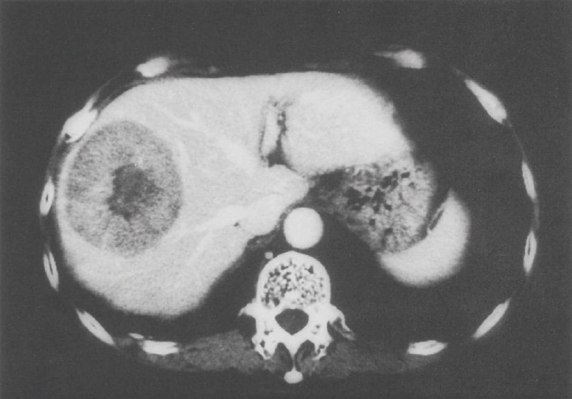
| 肝細胞が産生する | 肝細胞が産生しない |
|---|---|
| アルブミン | γ-グロブリン（形質細胞） |
| 凝固因子（I,II,V,VII,IX,X） | |
| コリンエステラーゼ（ChE） | |
| 胆汁酸（コレステロールから） |
| 漏出性（SAAG≥1.1） | 滲出性（SAAG<1.1） | |
|---|---|---|
| 代表疾患 | 肝硬変・心不全 | 癌性腹膜炎・感染性・膵性 |
| タンパク | <2.5 g/dL | >3.0 g/dL |
| LDH | 低値 | 高値 |
| 項目 | 内容 |
|---|---|
| 腸肝循環 | 回腸末端で95%再吸収→門脈→肝→再分泌（1日6-10回） |
| CCK | 食後→胆囊収縮・Oddi括約筋弛緩 |
| セクレチン | 胆管上皮から重炭酸塩分泌↑ |
| 一次胆汁酸 | コール酸・ケノデオキシコール酸（肝合成） |
| タンパク質 | 半減期 | 使用場面 |
|---|---|---|
| アルブミン | 約21日 | 長期的な肝予備能・栄養 |
| トランスフェリン | 約8日 | 栄養状態評価 |
| プレアルブミン（トランスサイレチン） | 約2日 | 短期的な栄養状態 |
| RBP（レチノール結合タンパク） | 約12時間 | 超短期栄養指標 |
| 原因 | 機序 |
|---|---|
| 溶血性貧血 | RBC崩壊↑→HbからBil産生過剰 |
| Gilbert症候群 | UGT1A1↓→抱合障害 |
| Crigler-Najjar症候群 | UGT1A1完全欠損 |
| 新生児黄疸 | UGT未発達→抱合能低下 |
| 動脈 | 分岐元 |
|---|---|
| 腹腔動脈 | 腹部大動脈（T12）→肝・脾・胃 |
| 上腸間膜動脈（SMA） | 腹部大動脈（L1）→小腸〜横行結腸右半 |
| 下腸間膜動脈（IMA） | 腹部大動脈（L3）→横行結腸左半〜直腸 |
| 間接Bil優位 | 直接Bil優位 |
|---|---|
| 溶血性貧血 | 閉塞性黄疸 |
| Gilbert症候群 | Dubin-Johnson症候群 |
| 新生児黄疸 | Rotor症候群 |
| Crigler-Najjar症候群 | 肝細胞性黄疸（両方↑） |
| 外分泌機能検査 | 内分泌機能検査 |
|---|---|
| BT-PABA試験 | 空腹時血糖・OGTT |
| セクレチン試験 | Cペプチド（インスリン分泌能） |
| 糞便中エラスターゼ | グルカゴン負荷試験 |
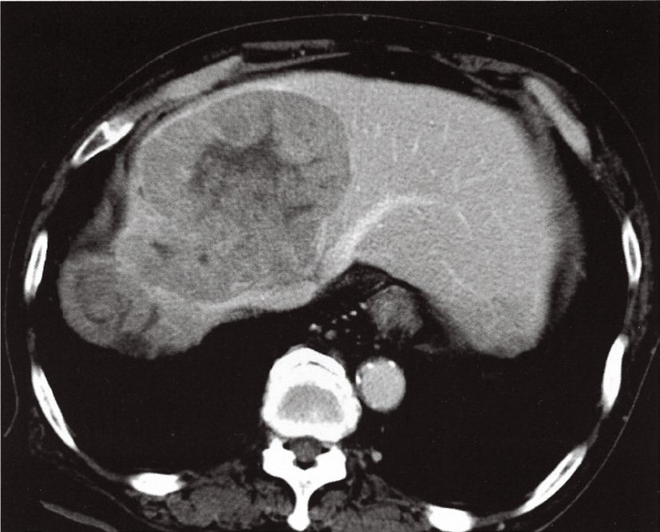
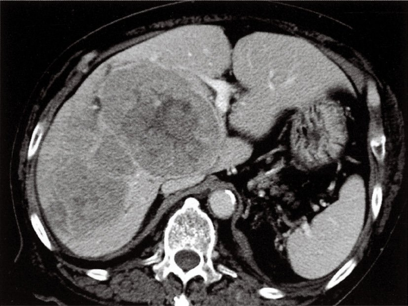
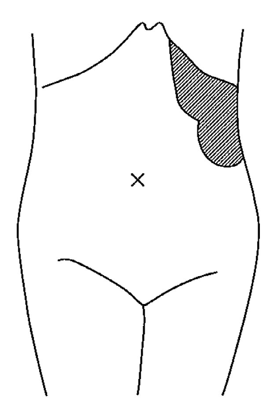
| 原因 | SAAG | 頻度 |
|---|---|---|
| 肝硬変 | ≥1.1（漏出性） | 約75%（最多） |
| 癌性腹膜炎 | <1.1（滲出性） | 約10% |
| 心不全 | ≥1.1 | 約5% |
| 結核性腹膜炎 | <1.1 | 稀 |
| 膵性腹水 | <1.1（アミラーゼ↑） | 稀 |
| 検査 | 結果 |
|---|---|
| ALP | ↑↑↑ |
| γ-GTP | ↑↑↑ |
| 直接Bil | ↑↑ |
| 尿中Bil | 陽性 |
| 尿中ウロビリノーゲン | 陰性 |
| 指標 | 正常値 |
|---|---|
| アルブミン（Alb） | ≥3.5 g/dL |
| PT（プロトロンビン時間） | PT活性≥70% |
| ChE（コリンエステラーゼ） | ≥200 U/L |
| ICG試験（R15） | <15% |
| ビリルビン（T-Bil） | <2.0 mg/dL |
| 黄疸をきたす疾患 | 黄疸をきたしにくい疾患 |
|---|---|
| 急性・慢性肝炎 | 脂肪肝（単純） |
| 肝硬変（末期） | 肝嚢胞 |
| 胆管癌・膵頭部癌（閉塞性） | 肝血管腫 |
| 溶血性貧血（間接Bil↑） |
| 障害される栄養素 | 障害されない |
|---|---|
| ビタミンK→PT延長・出血傾向 | 水溶性ビタミン（B群・C） |
| ビタミンA→夜盲症 | タンパク質 |
| ビタミンD→骨軟化症・Ca↓ | 糖質 |
| ビタミンE | |
| 脂肪（脂肪便） |
| 腹水性状 | 疾患 | SAAG |
|---|---|---|
| 漏出性 | 肝硬変・心不全・ネフローゼ | ≥1.1 |
| 滲出性 | 癌性腹膜炎・結核性・細菌性腹膜炎 | <1.1 |
| 血性腹水 | 癌性腹膜炎・外傷 | 不定 |
| 乳び腹水 | リンパ管損傷・悪性リンパ腫 | <1.1 |
| 膵性腹水 | 慢性膵炎・膵管損傷（アミラーゼ↑） | <1.1 |
| 便の色 | 疾患・原因 |
|---|---|
| 灰白色（白色） | 閉塞性黄疸・胆道閉鎖症・バリウム造影後 |
| 黒色（タール便） | 上部消化管出血（潰瘍・静脈瘤・胃癌） |
| 鮮血便 | 下部消化管出血・痔核 |
| 脂肪便（光沢・悪臭） | 膵外分泌不全・脂肪吸収障害 |
| 臓器 | 適した体位 |
|---|---|
| 肝・脾・腸管 | 仰臥位 |
| 腎臓 | 腹臥位または側臥位（CVA叩打痛） |
| 直腸・前立腺 | 左側臥位または截石位 |
| 腹水（shifting dullness） | 側臥位に変換 |
| 閉塞性黄疸の症候 | 閉塞性黄疸でない症候 |
|---|---|
| 掻痒感 | 尿中ウロビリノーゲン↑（閉塞では↓/陰性） |
| 灰白色便 | 溶血所見（網赤血球↑） |
| ビリルビン尿 | |
| ALP↑↑ | |
| PT延長（Vit K吸収↓） |
| 増加する（正解） | 増加しない |
|---|---|
| ALP（アルカリホスファターゼ） | 間接Bil |
| γ-GTP | ウロビリノーゲン（↓/陰性） |
| 直接（抱合型）ビリルビン | 網赤血球（溶血指標） |
| 閉塞性黄疸の原因 | 閉塞性黄疸でない |
|---|---|
| 胆管結石 | Gilbert症候群（体質性・間接Bil） |
| 胆管癌（肝門部・総胆管） | 溶血性貧血（間接Bil↑） |
| 膵頭部癌 | 急性肝炎（肝細胞性） |
| 十二指腸乳頭部癌 | |
| 原発性硬化性胆管炎（PSC） |
| 所見 | 説明 |
|---|---|
| 灰白色便 | 胆汁が腸管に届かない |
| ビリルビン尿（濃茶色） | 直接Bil（水溶性）が尿中へ |
| 掻痒感 | 胆汁酸の皮膚沈着 |
| 尿中ウロビリノーゲン陰性 | 腸肝循環遮断 |
| PT延長 | Vit K吸収障害→凝固因子↓ |
| ALP・γ-GTP著明↑ | 胆道系酵素放出 |